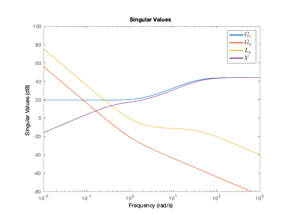

Contents
Translation
System
load Matrices/A_matrix.mat
A = A_matrix
load Matrices/B_stowed.mat
B = B_stowed
Cf = eye(12);
Df = [zeros(12, 6)];
sys_full = ss(A, B, Cf, Df);
tf_full = minreal(tf(sys_full));
tf_translation = minreal([tf_full(1:3, 1:3); tf_full(7:9, 1:3)]);
tf_full_sym = simplify(tf2sym(tf_full));
disp('tf_full_sym = ');
pretty(tf_full_sym);
tf_translation_sym = simplify(tf2sym(tf_translation));
disp('tf_translation_sym = ');
pretty(tf_translation_sym);
A =
0 0 0 0 0 0 0 0 0 0 0 0
0 0 0 0 0 0 0 0 0 0 0 0
0 0 0 0 0 0 0 0 0 0 0 0
0 0 0 0 0 0 0 0 0 0 0 0
0 0 0 0 0 0 0 0 0 0 0 0
0 0 0 0 0 0 0 0 0 0 0 0
1 0 0 0 0 0 0 0 0 0 0 0
0 1 0 0 0 0 0 0 0 0 0 0
0 0 1 0 0 0 0 0 0 0 0 0
0 0 0 1 0 0 0 0 0 0 0 0
0 0 0 0 1 0 0 0 0 0 0 0
0 0 0 0 0 1 0 0 0 0 0 0
B =
0.0630 0 0 0 0 0
0 0.0630 0 0 0 0
0 0 0.0630 0 0 0
0 0 0 5.4054 0 0
0 0 0 0 4.9505 0
0 0 0 0 0 5.3191
0 0 0 0 0 0
0 0 0 0 0 0
0 0 0 0 0 0
0 0 0 0 0 0
0 0 0 0 0 0
0 0 0 0 0 0
tf_full_sym =
/ 500 \
| ------, 0, 0, 0, 0, 0 |
| 7939 s |
| |
| 500 |
| 0, ------, 0, 0, 0, 0 |
| 7939 s |
| |
| 500 |
| 0, 0, ------, 0, 0, 0 |
| 7939 s |
| |
| 200 |
| 0, 0, 0, ----, 0, 0 |
| 37 s |
| |
| 500 |
| 0, 0, 0, 0, -----, 0 |
| 101 s |
| |
| 250 |
| 0, 0, 0, 0, 0, ---- |
| 47 s |
| |
| #1, 0, 0, 0, 0, 0 |
| |
| 0, #1, 0, 0, 0, 0 |
| |
| 0, 0, #1, 0, 0, 0 |
| |
| 200 |
| 0, 0, 0, -----, 0, 0 |
| 2 |
| 37 s |
| |
| 500 |
| 0, 0, 0, 0, ------, 0 |
| 2 |
| 101 s |
| |
| 250 |
| 0, 0, 0, 0, 0, ----- |
| 2 |
\ 47 s /
where
500
#1 == -------
2
7939 s
tf_translation_sym =
/ 500 \
| ------, 0, 0 |
| 7939 s |
| |
| 500 |
| 0, ------, 0 |
| 7939 s |
| |
| 500 |
| 0, 0, ------ |
| 7939 s |
| |
| 500 |
| -------, 0, 0 |
| 2 |
| 7939 s |
| |
| 500 |
| 0, -------, 0 |
| 2 |
| 7939 s |
| |
| 500 |
| 0, 0, ------- |
| 2 |
\ 7939 s /
Smith-McMillan Form
s=tf('s');
Gp = tf_translation;
Mp = minreal(smform(Gp));
syms s
Gp_sym = tf_translation_sym;
[UL_sym, H] = hermiteForm(Gp_sym * s^2);
disp('UL_sym = ');
pretty(UL_sym);
Mp_sym = tf2sym(Mp);
disp('Mp_sym = ');
pretty(Mp_sym);
UR_sym = (UL_sym * Gp_sym)\Mp_sym;
disp('UR_sym = ');
pretty(UR_sym);
UL = sym2tf(UL_sym);
UR = sym2tf(UR_sym);
UL_sym =
/ 7939 \
| 0, 0, 0, ----, 0, 0 |
| 500 |
| |
| 7939 |
| 0, 0, 0, 0, ----, 0 |
| 500 |
| |
| 7939 |
| 0, 0, 0, 0, 0, ---- |
| 500 |
| |
| 1, 0, 0, -s, 0, 0 |
| |
| 0, 1, 0, 0, -s, 0 |
| |
\ 0, 0, 1, 0, 0, -s /
Mp_sym =
/ 1 \
| --, 0, 0 |
| 2 |
| s |
| |
| 1 |
| 0, --, 0 |
| 2 |
| s |
| |
| 1 |
| 0, 0, -- |
| 2 |
| s |
| |
| 0, 0, 0 |
| |
| 0, 0, 0 |
| |
\ 0, 0, 0 /
UR_sym =
/ 1, 0, 0 \
| |
| 0, 1, 0 |
| |
\ 0, 0, 1 /
Interpolation Conditions
C = 1;
Wn = 3.25;
K = Wn^2/C;
Z = 2^-0.5;
tp = 1/(10*Wn);
syms s tz
T_eqn = ((K*C)*(tz*s + 1))/((s^2 + 2*Z*Wn*s + Wn^2)*(tp*s + 1));
dT_eqn = diff(T_eqn,s);
eqn = subs(dT_eqn,s,0) == 0;
tz = double(solve(eqn,tz))
tz =
0.4659
Control Design
s = tf('s');
G = zpk(minreal(C/s^2))
Y = zpk(minreal(((K*s^2)*(tz*s + 1)/((s^2 + 2*Z*Wn*s + Wn^2)*(tp*s + 1))),1e-03))
T = zpk(minreal((Y*G),1e-03))
S = zpk(minreal((1-T),1e-03))
Gc_term = zpk(minreal((Y/S),1e-03))
L = zpk(minreal((Gc_term*G),1e-03))
GS = zpk(minreal((G*S),1e-03))
Y_stability = isstable(Y)
T_stability = isstable(T)
S_stability = isstable(S)
GS_stability = isstable(GS)
M2 = 1/getPeakGain(S)
BW = bandwidth(T)
AE = getPeakGain(Y)
figure(1)
bodemag(Y, S, T);
legend('Y','S','T');
Gc = minreal([tf(Gc_term) 0 0 0 0 0; 0 tf(Gc_term) 0 0 0 0; 0 0 tf(Gc_term) 0 0 0]);
Gc_sym = expand(tf2sym(Gc));
disp('Gc_sym = ');
pretty(Gc_sym);
G =
1
---
s^2
Continuous-time zero/pole/gain model.
Y =
159.94 s^2 (s+2.146)
-------------------------------
(s+32.5) (s^2 + 4.596s + 10.56)
Continuous-time zero/pole/gain model.
T =
159.94 (s+2.146)
-------------------------------
(s+32.5) (s^2 + 4.596s + 10.56)
Continuous-time zero/pole/gain model.
S =
(s+9.381e-08) (s-9.381e-08) (s+37.1)
------------------------------------
(s+32.5) (s^2 + 4.596s + 10.56)
Continuous-time zero/pole/gain model.
Gc_term =
159.94 (s+2.146)
----------------
(s+37.1)
Continuous-time zero/pole/gain model.
L =
159.94 (s+2.146)
----------------
s^2 (s+37.1)
Continuous-time zero/pole/gain model.
GS =
(s+37.1)
-------------------------------
(s+32.5) (s^2 + 4.596s + 10.56)
Continuous-time zero/pole/gain model.
Y_stability =
logical
1
T_stability =
logical
1
S_stability =
logical
1
GS_stability =
logical
1
M2 =
0.8909
BW =
6.9502
AE =
159.9388
Gc_sym =
/ #1, 0, 0, 0, 0, 0 \
| |
| 0, #1, 0, 0, 0, 0 |
| |
\ 0, 0, #1, 0, 0, 0 /
where
703418314428355 s 10985
#1 == ------------------------------------- + --------------------------
/ 652603147754881 \ / 652603147754881 \
4398046511104 | s + --------------- | 32 | s + --------------- |
\ 17592186044416 / \ 17592186044416 /
Simulation
Lu = minreal(Gc * Gp, 1e-03);
Ly = minreal(Gp * Gc, 1e-03);
Y = minreal(inv(eye(3) + Lu) * Gc);
Ty = minreal(inv(eye(6) + Ly) * Ly);
Sy = minreal(inv(eye(6) + Ly), 1e-03);
Su = minreal(inv(eye(3) + Lu), 1e-03);
figure
step(Ty);
figure
step(Y);
figure
sigma(Y, Ty, Sy, Su)
[l, hObj] = legend('$Y$', '$T_{y}$', '$S_{y}$', '$S_{u}$','Interpreter','latex','FontSize', 12);
set(l,'string',{'$Y$', '$T_{y}$', '$S_{y}$', '$S_{u}$'});
hL = findobj(hObj,'type','line');
set(hL,'linewidth', 2);
figure
sigma(Gc, Gp, Ly, Y)
[l, hObj] = legend('$G_{c}$', '$G_{p}$', '$L_{y}$', '$Y$','Interpreter','latex','FontSize', 12);
set(l,'string',{'$G_{c}$', '$G_{p}$', '$L_{y}$', '$Y$'});
hL = findobj(hObj,'type','line');
set(hL,'linewidth', 2);
figure
sigma(Gc, Gp, Y)
[l, hObj] = legend('$G_{c}$', '$G_{p}$', '$Y$','Interpreter','latex','FontSize', 12);
set(l,'string',{'$G_{c}$', '$G_{p}$', '$Y$'});
hL = findobj(hObj,'type','line');
set(hL,'linewidth', 2);
figure
sigma(Ly, Sy, Ty)
[l, hObj] = legend('$L_{y}$', '$S_{y}$', '$T_{y}$','Interpreter','latex','FontSize', 12);
set(l,'string',{'$L_{y}$', '$S_{y}$', '$T_{y}$'});
hL = findobj(hObj,'type','line');
set(hL,'linewidth', 2);
figure
sigma(Sy, Su)
[l, hObj] = legend('$S_{y}$', '$S_{u}$','Interpreter','latex','FontSize', 12);
set(l,'string',{'$S_{y}$', '$S_{u}$'});
hL = findobj(hObj,'type','line');
set(hL,'linewidth', 2);
